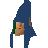

Elkoy

| Config name | elkoy |
| NPC id | 473 |
| Combat level | hidden |
| Options | Talk-to |
| Wander range | 3 tiles from spawn |
| Area folder | area_gnome |
| Defined in | scripts/areas/area_gnome/configs/gnome.npc |
Elkoy
It's a tree gnome.
Show all 1 spawn on the world map → Open in knowledge graph →
Locations
| Area | Coordinates | Level | Count | Map |
|---|---|---|---|---|
| Tree Gnome Village | 2504, 3191 | 0 | 1 | view |
Dialogue
PlayerHello there.
ElkoyHello, welcome to our maze. I'm Elkoy the tree gnome.
PlayerI haven't heard of your sort.
ElkoyThere's not many of us left. Once you could find tree gnomes anywhere in the world, now we hide in small groups to avoid capture.
PlayerCapture by whom?
ElkoyTree gnomes have been hunted for so called 'fun' since as long as I can remember.
ElkoyOur main threat nowadays are General Khazard's troops. They know no mercy, but are also very dense. They'll never find their way through our maze.
ElkoyHave fun.
PlayerHello Elkoy.
ElkoyOh my! Oh my!
PlayerWhat's wrong?
ElkoyThe orb, they have the orb. We're doomed. Do you need me to show you back to the village?
ElkoyThe orb, they have the orb. We're doomed. Do you need me to show you through the maze?
PlayerHello.
ElkoyYou must retrieve the orb, or the gnome village is doomed. Do you need me to show you through the maze?
PlayerYes please.
ElkoyOk then, follow me.
ElkoyElkoy
PlayerNot now, thanks.
PlayerHello Elkoy.
ElkoyYou're back! And the orb?
PlayerNo, I'm afraid not.
ElkoyPlease, we must have the orb if we are to survive. Do you need me to show you through the maze?
PlayerHello Elkoy.
ElkoyYou're back! And the orb?
PlayerI have it here.
ElkoyYou're our saviour. Please return it to the village and we are all saved. Would you like me to show you the way to the village?
PlayerYes please.
ElkoyOk then, follow me.
ElkoyElkoy
PlayerNo thanks Elkoy.
ElkoyPlease, we must have the orb if we are to survive.
PlayerHello Elkoy.
ElkoyDid you hear?
ElkoyKhazard's men have pillaged the village! They slaughtered many, and took the other orbs in an attempt to lead us out of the maze. When will the misery end?
ElkoyWould you like me to show you the way to the village?
PlayerYes please.
ElkoyOk then, follow me.
ElkoyElkoy
PlayerNo thanks Elkoy.
ElkoyOk then, take care.
PlayerHello Elkoy.
ElkoyYou truly are a hero.
PlayerThanks.
ElkoyYou saved us by returning the orbs of protection. I'm humbled and wish you well.
ElkoyWould you like me to show you the way to the village?
PlayerYes please.
ElkoyOk then, follow me.
ElkoyElkoy
PlayerNo thanks Elkoy.
ElkoyOk then, take care.
PlayerHello Elkoy.
ElkoyHi there, I hope life is treating you well. Would you like me to show you the way to the village?
Referenced in scripts
scripts/areas/area_gnome/scripts/elkoy.rs2